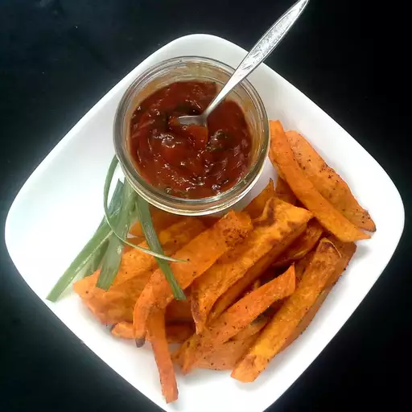

Easy Sweet Potato Fries with Curry Ketchup

Description
Easy to make baked sweet potato fries served with a zesty curry ketchup dipping sauce. These fries are simply amazing!
Ingredients
- 2 (1 pound) sweet potatoes, peeled and cut into 1/2-inch thick wedges
- 1 tablespoon extra-virgin olive oil
- ½ teaspoon sea salt
- ½ teaspoon paprika
- 1 tablespoon extra-virgin olive oil
- 2 green onions, chopped
- 1 teaspoon mild curry powder
- 1 cup ketchup
Instructions
- Preheat oven to 400 degrees F (200 degrees C).
- Toss sweet potato wedges with 1 tablespoon olive oil in a large bowl;
season with sea salt and paprika and toss again.
Spread sweet potatoes in a single layer onto a baking sheet.
- Bake sweet potatoes in the preheated oven until soft, about 20 minutes.
- Heat 1 tablespoon olive oil in a small skillet over medium-high heat.
Cook and stir green onions with curry powder in the hot oil until softened and fragrant, about 1 minute.
Stir ketchup into the mixture and transfer to a bowl. Serve sweet potatoes with curry ketchup for dipping.
Return to main page